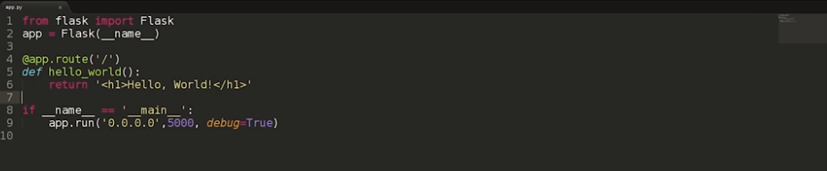
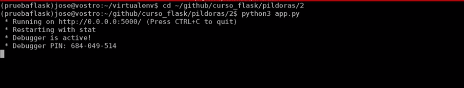
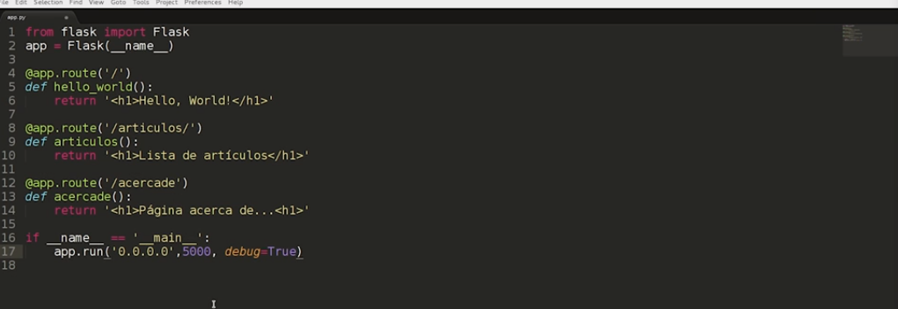
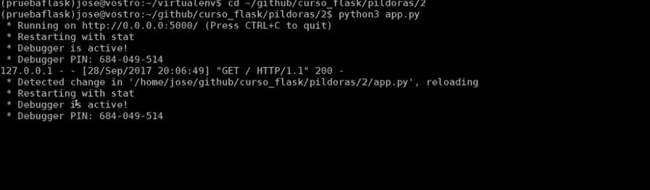

Es un marco que intenta proporcionar solo los componentes que son absolutamente necesarios para que un desarrollador cree una aplicación; o puede centrarse en proporcionar la funcionalidad de un área en particular. En el caso de los marcos de aplicaciones web, un microframework puede diseñarse específicamente para crear API para otro servicio o aplicación.
Leer másLa palabra “micro” no designa a que sea un proyecto pequeño o que nos permita hacer páginas web pequeñas sino que al instalar Flask tenemos las herramientas necesarias para crear una aplicación web funcional pero si se necesita en algún momento una nueva funcionalidad hay un conjunto muy grande extensiones (plugins) que se pueden instalar con Flask que le van dotando de funcionalidad.
De principio en la instalación no se tienen todas las funcionalidades que se pueden necesitar pero de una manera muy sencilla se pueden extender el proyecto con nuevas funcionalidades por medio de plugins.
El patrón MVC es una manera o una forma de trabajar que permite diferenciar y separar lo que es el modelo de datos (los datos que van a tener la App que normalmente están guardados en BD), la vista (página HTML) y el controlador (donde se gestiona las peticiones de la app web).
Empezaremos con la instalación de Flask y luego veras un pequeño ejemplo del programa para que puedas ver la características principales de cómo se puede construir aplicaciones web con Python a partir del Framework Flask.
Se utilizará un entorno virtual P ython donde se va a instalar el Framework y a partir de allí se construirá la aplicación.
Lo primero en hacer es crear un entorno virtual, en OpenWebinars tienes distintos artículos y distinta información sobre el trabajo con entornos virtuales en Python y puedes acceder a él para conocerlo en profundidad.
En principio como administrador se debe hacer:
$ sudo apt-get install python-virtualenv
Luego se crea el entorno virtual con el usuario sin privilegios con el nombre pruebaflask:
$ virtualenv -p /usr/bin/python3 pruebaflask.
Un entorno virtual nos permite tener en un usuario sin privilegios un ámbito donde se puede instalar con el instalador pip distintos módulos de Python que se pueden utilizar cuando se tiene activado dicho entorno.
Se activa el entorno virtual:
$ source pruebaflask/bin/activate
Ahora todas las instalaciones que hagas de módulo Python van a estar referidas en este entorno virtual y van a estar disponibles mientras esté activado ese entorno. Con esto se consigue tener un entorno aislado del sistema y se puede trabajar con versiones y módulos de Python determinados para nuestra aplicación web.
En este entorno se instalará el Flask:
$ pip install flask
Se comprueba la instalación:
$ flask --version
Con estos pasos tendriamos instalado nuestro Framework Flask en un entorno virtual y así ya podemos empezar a trabajar.
Cuando estamos trabajando con Apps Web en Python todas las peticiones que hacen los clientes las recibe un único programa, que es lo que se llama un único punto de entrada, por lo tanto nuestra aplicación tiene que ser capaz de,según la ruta a la que se está accediendo, ejecutar un código o ejecutar otro. Ese código terminará generando una respuesta HTTP que recibe el cliente.
Lo primero que se ha hecho es importar del módulo flask la clase Flask y se ha creado una aplicación:
from flask import Flask
app= Flask(__name__)
Esta aplicación es WSGI que permite obtener la información de la petición, realizar una operación y posteriormente generar una respuesta. Y, ¿Cómo se hace esto?. Se hace mediante la función route que permite definir las distintas rutas a las que se va poder acceder a nuestra aplicación.
@app.route('/')
En este caso si accedemos a la página principal (‘/‘) se va a ejecutar la función hello_world(): que simplemente va a devolver una cadena de caracteres que es una respuesta HTTP con un código de estado 200, con una cabecera de respuesta y con un cuerpo con el que se devuelve el código HTML:
<h1>Hello, World!</h1>
Como es el primer ejemplo y es una pequeña introducción no estamos generado páginas HTML válidas con toda la estructura, para ello en otro video se explicará el uso de plantillas con Flask.
A continuación cuando se ejecuta el programa con la función: app.run lo que se hace es ejecutar un servidor web para hacer las pruebas y se puede acceder a él desde cualquier direccion (0.0.0.0) desde el puerto 5000.
app.run('0.0.0.0', 5000, debug=True)
python3 app.py
Se puede observar que se está corriendo un servidor web en el puerto 5000.
Vamos al navegador y podemos acceder y ver el ejemplo por el localhost:5000:
Sigamos trabajando con las rutas: Se puede ahora poner una ruta que me responda cuando accedo a artículos:
app.route('/articulos/')
Se ha colocado la barra de atrás,esto lo que hace es simular que se está entrando en un sistema de archivos, es decir, en un directorio pero en verdad no existe ningún directorio o artículos dentro de mi sistema de archivo, simplemente mi programa comprueba la ruta y según ella se genera una respuesta u otra. Se puede tener otra ruta (‘/acercade’):
app.route('/acercade')
En este caso que no se ha puesto una barra al final, quiere decir que se está simulando que se está accediendo a un fichero.
Probamos de nuevo y sii te fijas en la terminal se ha detectado que se han hecho cambios en el código y por eso ha reiniciado el servidor web.
© Todos los derechos reservados 2019 | Publicado por: Valente Guevara López